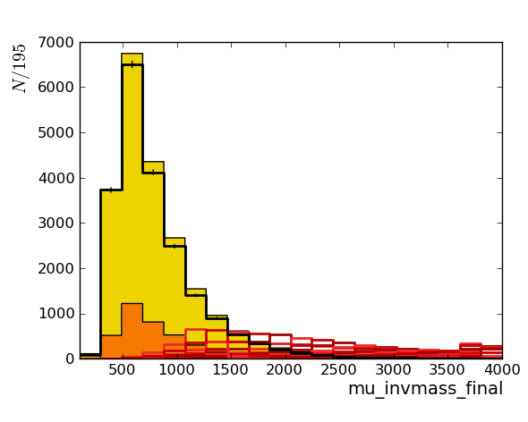
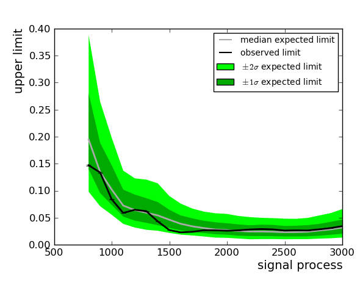
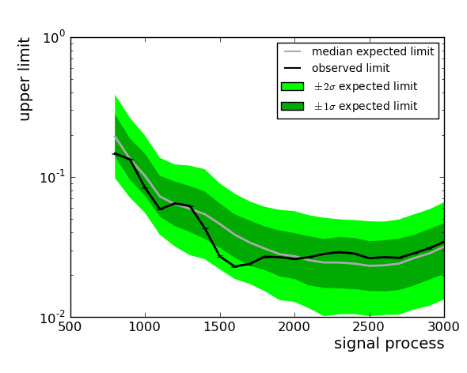

Hint: click on top-level headers to toggle visibility of that section.
Observables (xmin, xmax, nbins):
Background processes:
Signal processes:
Nuisance parameters (includes only those which apply to the background-only model):
Rates for all observables and processes as given by the 'nominal' templates. If errors are given, they are MC stat. uncertainties.
| process / observable | mu_invmass_final |
|---|---|
| ttbar | 17836 +/- 111.94 |
| wjets | 3904.3 +/- 57.744 |
| total background | 21740 +/- 125.95 |
| wp1000 | 1759.6 +/- 6.5124 |
| wp1100 | 1827.5 +/- 6.9328 |
| wp1200 | 1815.7 +/- 6.4133 |
| wp1300 | 1743.8 +/- 6.5798 |
| wp1400 | 1668.6 +/- 6.303 |
| wp1500 | 1585.8 +/- 6.1859 |
| wp1600 | 1486.4 +/- 6.0377 |
| wp1700 | 1402.1 +/- 5.7606 |
| wp1800 | 1326.2 +/- 5.8709 |
| wp1900 | 1257.3 +/- 5.7428 |
| wp2000 | 1182.7 +/- 5.5462 |
| wp2100 | 1118.1 +/- 5.1412 |
| wp2200 | 1064.5 +/- 4.9977 |
| wp2300 | 1019.6 +/- 5.3365 |
| wp2400 | 978.13 +/- 4.8967 |
| wp2500 | 952.52 +/- 4.8678 |
| wp2600 | 932.5 +/- 4.6515 |
| wp2700 | 922.45 +/- 4.6965 |
| wp2800 | 918.56 +/- 4.9076 |
| wp2900 | 918.23 +/- 4.7 |
| wp3000 | 929.98 +/- 4.6708 |
| wp800 | 1632.4 +/- 6.2232 |
| wp900 | 1736.2 +/- 6.3421 |
| DATA | 20639 |
The table below summarises the impact of an nuisance parameter on the rate prediction of a process.
For a nuisance parameter, (gauss) indicates that this nuisance parameter has a gaussian prior, (gamma) that it has a gamma prior.
For the individual cells, (r) indicates the 'rate only' part of the uncertainty, (s) indicates the effect on the rate of an uncertainty
treated via template morphing (i.e., the rate effect of an uncertainty treated as part of the
template morphing; even if this is zero, the shape effect is still taken into account). Note that both effects are applied seperatly, so
the total rate change is about the linear sum of these two.
The rate change in 'plus' direction of the uncertainty is written as superscript,
the 'minus' direction as subscript.
All numbers are in percent.
| process / nuisance parameter | PU (gauss) | btag (gauss) | hf (gauss) | jer (gauss) | jes (gauss) | lumi (gauss) | matching (gauss) | muhlteff (gauss) | mulepeff (gauss) | q2scale (gauss) | ttbar_rate (gauss) | zerotagshape (gauss) |
|---|---|---|---|---|---|---|---|---|---|---|---|---|
| ttbar | -0.43+0.00 (s) | +2.39-2.42 (s) | --- | +0.32-0.26 (s) | +3.24-4.20 (s) | +4.40-4.21 (r) | -2.49+1.40 (s) | +1.00-0.99 (r) | +1.00-0.99 (r) | -2.64-1.07 (s) | +15.00-13.04 (r) | --- |
| wjets | -0.08+0.00 (s) | +4.61-6.25 (s) | +8.11-8.06 (s) | +1.69-0.61 (s) | +7.72-6.55 (s) | +4.40-4.21 (r) | --- | +1.00-0.99 (r) | +1.00-0.99 (r) | --- | --- | -0.00+0.00 (s) |
| wp1000 | --- | --- | --- | --- | --- | +4.40-4.21 (r) | --- | +1.00-0.99 (r) | +1.00-0.99 (r) | --- | --- | --- |
| wp1100 | --- | --- | --- | --- | --- | +4.40-4.21 (r) | --- | +1.00-0.99 (r) | +1.00-0.99 (r) | --- | --- | --- |
| wp1200 | --- | --- | --- | --- | --- | +4.40-4.21 (r) | --- | +1.00-0.99 (r) | +1.00-0.99 (r) | --- | --- | --- |
| wp1300 | --- | --- | --- | --- | --- | +4.40-4.21 (r) | --- | +1.00-0.99 (r) | +1.00-0.99 (r) | --- | --- | --- |
| wp1400 | --- | --- | --- | --- | --- | +4.40-4.21 (r) | --- | +1.00-0.99 (r) | +1.00-0.99 (r) | --- | --- | --- |
| wp1500 | --- | --- | --- | --- | --- | +4.40-4.21 (r) | --- | +1.00-0.99 (r) | +1.00-0.99 (r) | --- | --- | --- |
| wp1600 | --- | --- | --- | --- | --- | +4.40-4.21 (r) | --- | +1.00-0.99 (r) | +1.00-0.99 (r) | --- | --- | --- |
| wp1700 | --- | --- | --- | --- | --- | +4.40-4.21 (r) | --- | +1.00-0.99 (r) | +1.00-0.99 (r) | --- | --- | --- |
| wp1800 | --- | --- | --- | --- | --- | +4.40-4.21 (r) | --- | +1.00-0.99 (r) | +1.00-0.99 (r) | --- | --- | --- |
| wp1900 | --- | --- | --- | --- | --- | +4.40-4.21 (r) | --- | +1.00-0.99 (r) | +1.00-0.99 (r) | --- | --- | --- |
| wp2000 | --- | --- | --- | --- | --- | +4.40-4.21 (r) | --- | +1.00-0.99 (r) | +1.00-0.99 (r) | --- | --- | --- |
| wp2100 | --- | --- | --- | --- | --- | +4.40-4.21 (r) | --- | +1.00-0.99 (r) | +1.00-0.99 (r) | --- | --- | --- |
| wp2200 | --- | --- | --- | --- | --- | +4.40-4.21 (r) | --- | +1.00-0.99 (r) | +1.00-0.99 (r) | --- | --- | --- |
| wp2300 | --- | --- | --- | --- | --- | +4.40-4.21 (r) | --- | +1.00-0.99 (r) | +1.00-0.99 (r) | --- | --- | --- |
| wp2400 | --- | --- | --- | --- | --- | +4.40-4.21 (r) | --- | +1.00-0.99 (r) | +1.00-0.99 (r) | --- | --- | --- |
| wp2500 | --- | --- | --- | --- | --- | +4.40-4.21 (r) | --- | +1.00-0.99 (r) | +1.00-0.99 (r) | --- | --- | --- |
| wp2600 | --- | --- | --- | --- | --- | +4.40-4.21 (r) | --- | +1.00-0.99 (r) | +1.00-0.99 (r) | --- | --- | --- |
| wp2700 | --- | --- | --- | --- | --- | +4.40-4.21 (r) | --- | +1.00-0.99 (r) | +1.00-0.99 (r) | --- | --- | --- |
| wp2800 | --- | --- | --- | --- | --- | +4.40-4.21 (r) | --- | +1.00-0.99 (r) | +1.00-0.99 (r) | --- | --- | --- |
| wp2900 | --- | --- | --- | --- | --- | +4.40-4.21 (r) | --- | +1.00-0.99 (r) | +1.00-0.99 (r) | --- | --- | --- |
| wp3000 | --- | --- | --- | --- | --- | +4.40-4.21 (r) | --- | +1.00-0.99 (r) | +1.00-0.99 (r) | --- | --- | --- |
| wp800 | --- | --- | --- | --- | --- | +4.40-4.21 (r) | --- | +1.00-0.99 (r) | +1.00-0.99 (r) | --- | --- | --- |
| wp900 | --- | --- | --- | --- | --- | +4.40-4.21 (r) | --- | +1.00-0.99 (r) | +1.00-0.99 (r) | --- | --- | --- |
The priors for the nuisance parameters are either Gaussian or gamma distributions. As limit cases, these can have with=0 or width=inf which makes them delta or flat distributions, respectively.
| parameter | distribution type | distribution parameters |
|---|---|---|
| jer | gauss | width = 1.0; range = [-inf, inf]; mean = 0.0 |
| jes | gauss | width = 1.0; range = [-inf, inf]; mean = 0.0 |
| mulepeff | gauss | width = 1.0; range = [-inf, inf]; mean = 0.0 |
| ttbar_rate | gauss | width = 1.0; range = [-inf, inf]; mean = 0.0 |
| btag | gauss | width = 1.0; range = [-inf, inf]; mean = 0.0 |
| PU | gauss | width = 1.0; range = [-inf, inf]; mean = 0.0 |
| lumi | gauss | width = 1.0; range = [-inf, inf]; mean = 0.0 |
| q2scale | gauss | width = 1.0; range = [-inf, inf]; mean = 0.0 |
| zerotagshape | gauss | width = 1.0; range = [-inf, inf]; mean = 0.0 |
| muhlteff | gauss | width = 1.0; range = [-inf, inf]; mean = 0.0 |
| hf | gauss | width = 1.0; range = [-inf, inf]; mean = 0.0 |
| matching | gauss | width = 1.0; range = [-inf, inf]; mean = 0.0 |
Everything normalized to expectation, i.e., to the normalization in the template input file, possibly scaled via the python script file.
Color Code:
Observable 'mu_invmass_final':

| signal process | expected limit | expected limit (central 1sigma) | expected limit (central 2sigma) | observed limit |
|---|---|---|---|---|
| 800 | 0.195 | 0.14--0.28 | 0.0981--0.388 | 0.147 +- 0.00122 |
| 900 | 0.135 | 0.0955--0.188 | 0.0712--0.264 | 0.134 +- 0.0008 |
| 1000 | 0.102 | 0.0737--0.147 | 0.0555--0.198 | 0.0841 +- 0.000717 |
| 1100 | 0.0726 | 0.0521--0.102 | 0.0387--0.137 | 0.0589 +- 0.000323 |
| 1200 | 0.0641 | 0.0446--0.0928 | 0.0319--0.123 | 0.0647 +- 0.000761 |
| 1300 | 0.0593 | 0.0405--0.0862 | 0.0277--0.121 | 0.0622 +- 0.000552 |
| 1400 | 0.0543 | 0.0362--0.079 | 0.0259--0.114 | 0.0432 +- 0.000217 |
| 1500 | 0.0463 | 0.0312--0.0648 | 0.0219--0.0901 | 0.0271 +- 0.000411 |
| 1600 | 0.0388 | 0.0265--0.0541 | 0.0187--0.076 | 0.023 +- 0.000117 |
| 1700 | 0.0341 | 0.0233--0.0489 | 0.0173--0.0669 | 0.0239 +- 0.000208 |
| 1800 | 0.0308 | 0.0217--0.0444 | 0.0153--0.0613 | 0.0269 +- 0.000257 |
| 1900 | 0.0281 | 0.0195--0.0415 | 0.0132--0.0583 | 0.0267 +- 0.000237 |
| 2000 | 0.0272 | 0.0187--0.0398 | 0.0128--0.057 | 0.0259 +- 0.000227 |
| 2100 | 0.0254 | 0.0168--0.0377 | 0.0115--0.0532 | 0.0268 +- 0.000168 |
| 2200 | 0.0245 | 0.0161--0.0361 | 0.0101--0.0511 | 0.0283 +- 6.28e-05 |
| 2300 | 0.0245 | 0.016--0.0372 | 0.0105--0.0498 | 0.0291 +- 0.000222 |
| 2400 | 0.0241 | 0.0158--0.0367 | 0.0105--0.0493 | 0.0284 +- 0.000163 |
| 2500 | 0.0232 | 0.0154--0.0348 | 0.0101--0.0483 | 0.0263 +- 0.000111 |
| 2600 | 0.0234 | 0.0153--0.0353 | 0.0103--0.048 | 0.0267 +- 0.000225 |
| 2700 | 0.0241 | 0.0156--0.0364 | 0.0104--0.0497 | 0.0265 +- 0.000111 |
| 2800 | 0.0264 | 0.0168--0.0386 | 0.0113--0.0542 | 0.0285 +- 5.56e-05 |
| 2900 | 0.0284 | 0.0185--0.0425 | 0.012--0.0587 | 0.0309 +- 0.000359 |
| 3000 | 0.0318 | 0.0203--0.0466 | 0.0133--0.066 | 0.0344 +- 0.000381 |


This page was generated at 2013-02-12 17:40:20.073845 for workdir '/uscms_data/d2/dsperka/8TeV/MakeTBntuples/29Jan/CMSSW_5_3_6/src/UserCode/dsperka/wprimetb/theta/utils/Wprime/12Feb_testSigShape/WprimeInvLimits_2012_mu'.